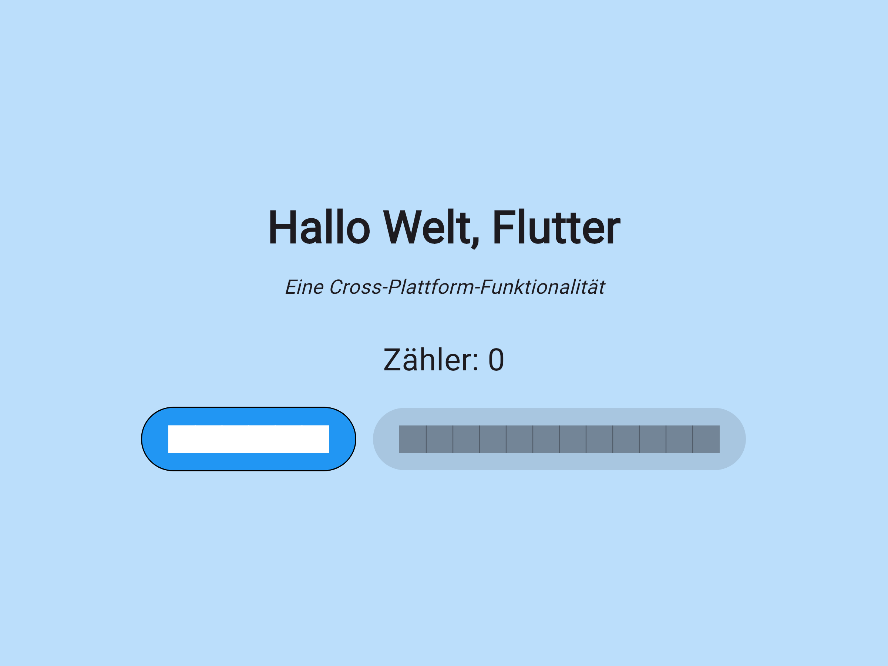
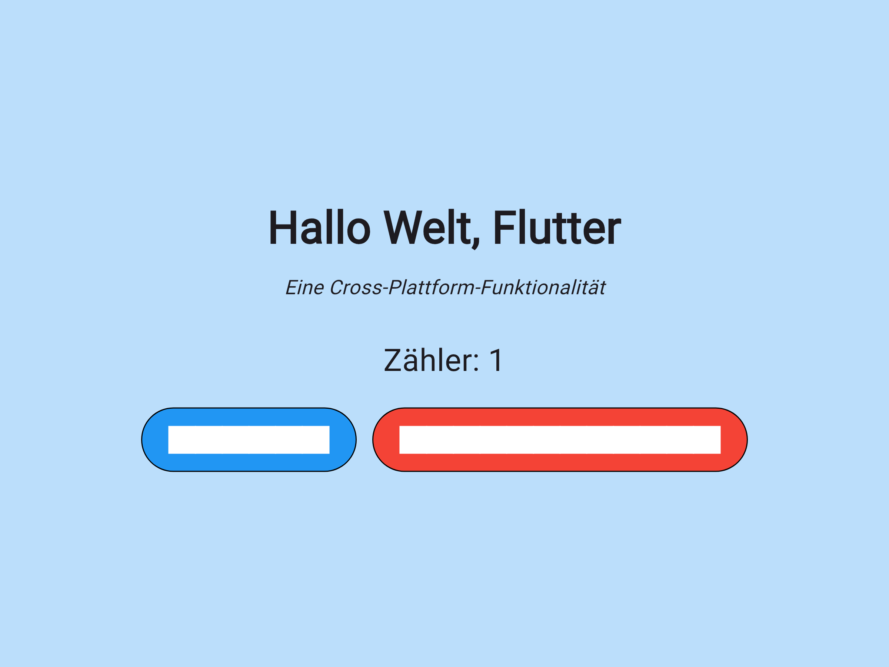

Erzeugt am: 2026-09-18 10:21:14
| Feature | Scenario | Status | Schritte | Screenshot |
|---|---|---|---|---|
| begruessung | App zeigt Begrüßung an | PASSED | `Gegeben ist, dass die App frisch gestartet ist, dann wird der Titel "Hallo Welt, Flutter" angezeigt, und der Untertitel "Eine Cross-Plattform-Funktionalität" ist sichtbar, und der Zähler zeigt 0` |  |
| begruessung | App startet ohne Fehlerdialog | PASSED | `Gegeben ist, dass die App frisch gestartet ist, dann wird keine Android-Fehlermeldung angezeigt, und die App ist im Vordergrund` | |
| zaehlen | Zähler wird durch Tippen erhöht | PASSED | `Gegeben ist, dass der Zähler bei 0 steht, dann zeigt der Zähler 1, dann zeigt der Zähler 2, und der Untertitel "Eine Cross-Plattform-Funktionalität" bleibt sichtbar` |  |
| zuruecksetzen | Zurücksetzen setzt Zähler auf 0 zurück | PASSED | `Gegeben ist, dass der Zähler bei 2 steht, dann zeigt der Zähler 0` | |
| zuruecksetzen | Zurücksetzen ist deaktiviert, wenn Zähler 0 ist | PASSED | `Gegeben ist, dass der Zähler bei 0 steht, dann zeigt der Zähler weiterhin 0` | |
Gesamtdauer der Tests: siehe CI-Lauf